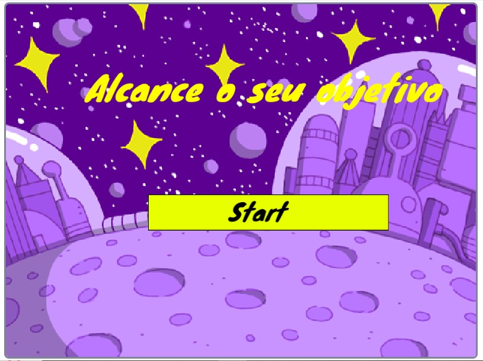

Space Cat foi um jogo criado no scratch com finalidade na conclusão de módulo 0 do curso PDA (Programadores do Amanhã). Feito pelo Squad 5, Space Cat é um jogo que faz o jogar buscar 4 objeitos e 4 metas, que foram furtados pelos ratos, o jogador tem que dizer quais as metas e objetivos que ele perdeu, logo em seguida ir em buscas dos ratos para recuperar suas metas e objetivos perdidos. você pode jogar Space Cat a partir desse link: https://scratch.mit.edu/projects/932767886.
Atividades
Space Cat
